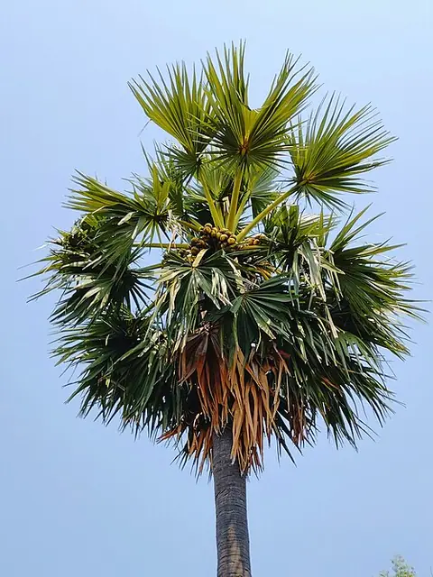

Palm tuber
Palm tuber is a root or shoot you can forage from December to January in South India and East. Sprouted palmyra seeds pushed into sand grow a long starchy tuber in about three months. A Pongal-season snack.

When is palm tuber in season in India?
Palm tuber is usually in season December to January. Timing shifts with weather, latitude and altitude.
Where does palm tuber grow in India?
Palm tuber grows in Andaman and Nicobar Islands, Andhra Pradesh, Bihar, Goa, Jharkhand, Karnataka, Kerala, Lakshadweep, Odisha, Puducherry, Tamil Nadu, Telangana, West Bengal. Regions: South India, East.
How do you recognise palm tuber?
Sprouted palmyra seeds pushed into sand grow a long starchy tuber in about three months. A Pongal-season snack.
How do you harvest palm tuber?
Plant ripe palmyra seeds in a sand bed, then dig up the tubers about three months later.
How do you eat palm tuber?
Boiled with turmeric and salt, then peeled and eaten.
How do you store palm tuber?
Boil, split, sun-dry, and grind into flour (odiyal maavu).
What is palm tuber good for?
Calories.
What can you cook with palm tuber?
- Panang kizhangu: Palm tubers boiled with turmeric and salt, peeled and eaten warm.